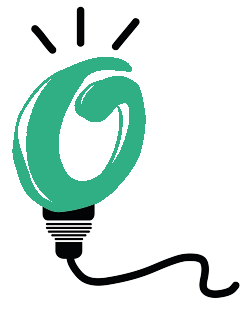

POLÍTICA DE COOKIES
1. Introducció
Aquest document descriu la Política de cookies que regula el lloc web
amb URL https://www.consumestrategic.cat , d’ara endavant el Web, amb l'objectiu de garantir
la privacitat dels usuaris d'Internet.
El titular del Web es l’Assemblea Nacional Catalana, d’ara endavant ANC, amb domicili social en carrer de Marina 315, 08025 Barcelona, amb CIF G65581621, i inscrita en el Registre de les associacions i federacions de Catalunya, amb número d’inscripció 46548-J/1 d'acord amb la Llei 34/2002, d'11 de juliol, de Serveis de la Societat de la Informació i de Comerç Electrònic, posa a la disposició de socis, simpatitzants i altres usuaris d'Internet.
Informem als usuaris d'Internet que al Web utilitzem cookies.
Aquestes cookies ens permeten facilitar l'ús i navegació, garantir l'accés a determinades funcionalitats i addicionalment, ens ajuden a millorar la qualitat del Web d'acord als hàbits i estils de navegació dels Usuaris d'Internet.
2. Què són les cookies?
Les cookies són petits arxius de text que els llocs web emmagatzemen en el seu ordinador, telèfon intel·ligent (Smartphone), Tablet o qualsevol altre dispositiu d'accés a Internet.
3. Per a què serveixen?
Les cookies serveixen per reconèixer el dispositiu dels usuaris d'Internet quan
tornen a visitar el Web, facilitant-li el seu ús recordant les seves preferències i configuració de navegació
(p. ex. Idioma, país, etc.). També serveixen per millorar els serveis que oferim i per poder recopilar
informació estadística que ens permet entendre com els usuaris d'Internet utilitzen el nostre Web i ens ajuden
a millorar la seva estructura i continguts.
Algunes cookies són estrictament necessàries perquè el Web funcioni bé i unes altres serveixen per millorar
el rendiment i la seva experiència com a usuari.
Les cookies s'associen únicament a un usuari d'Internet anònim i el seu dispositiu d'accés a Internet i no
proporcionen referències que permetin deduir dades personals de l'usuari d'Internet.
4. Tipus de cookies
Tipus de cookies segons l'entitat que les gestioni. Segons qual sigui l'entitat que
gestioni el lloc web des d'on s'enviïn les cookies i tractin les dades que s'obtinguin, es poden distingir les
següents:
Cookies pròpies: són aquelles que s'envien al dispositiu d'accés a Internet de l'usuari des del lloc web gestionat
pel propi titular del lloc i des del qual es presta el servei sol·licitat per l'usuari d'Internet.
Cookies de tercer: Són aquelles que s'envien al dispositiu d'accés a Internet de l'usuari des del lloc web però
que no és gestionen pel titular del web, sinó per una altra entitat que tracta les dades obtingudes mitjançant les cookies.
Tipus de cookies segons el termini de temps que romanen activades. Segons el termini de temps que romanen activades
en el dispositiu d'accés a Internet de l'usuari, es poden distingir les següents:
Cookies de sessió: Són un tipus de cookies dissenyades per recollir i emmagatzemar dades mentre l'usuari d'Internet
accedeix a un lloc web. S’utilitzen per emmagatzemar informació que només interessa conservar per a la prestació del
servei sol·licitat per l'suari d'Internet en una sola ocasió (la sessió que està utilitzant en aquest moment).
Cookies persistents: Són un tipus de cookies que les dades segueixen emmagatzemats en el dispositiu d'accés a
Internet de l'usuari i poden ser accedides i tractades durant un període definit pel responsable de la cookie,
i que pot anar d'uns minuts a diversos anys.
Tipo de cookies segons la seva finalitat.
Segons la finalitat per la qual es tractin les dades obtingudes mitjançant les cookies, es poden distingir les següents:
Cookies tècniques: Són aquelles que permeten a l'usuari d'Internet la navegació per un lloc web i la utilització de les
diferents opcions o serveis que en ell existeixin com, per exemple, controlar el tràfic i la comunicació de dades, identificar
la sessió, accedir a parts d'accés restringit, recordar els elements que integren una comanda, realitzar el procés de compra
d'una comanda, realitzar la sol·licitud d'inscripció o participació en un esdeveniment, utilitzar elements de seguretat durant
la navegació, emmagatzemar continguts per a la difusió d'imatges o so o compartir continguts mitjançant les xarxes socials.
Cookies de personalització: Són aquelles que permeten a l'usuari d'Internet accedir al servei amb algunes característiques de
caràcter general predefinides en funció d'una sèrie de criteris en el dispositiu de l'usuari d'Internet com per exemple serien
l'idioma, el tipus de navegador que utilitza per accedir al servei, la configuració regional des d'on accedeix al servei, etc.
Cookies d'anàlisi: Són aquelles que permeten al responsable de les mateixes, el seguiment i anàlisi del comportament dels usuaris
d'Internet en el lloc web. La informació recollida mitjançant aquest tipus de cookies s'utilitza en el mesurament de l'activitat
del lloc web i per a l'elaboració de perfils de navegació dels usuaris d'Internet per aquest lloc web, amb la finalitat d'introduir
millores en funció de l'anàlisi de les dades d'ús que fan els usuaris d'Internet del servei.
Cookies publicitàries: Són aquelles que permeten la gestió, de la forma més eficaç possible, dels espais publicitaris que,
si escau, el titular hagi inclòs en el lloc web des del qual presta el servei sol·licitat sobre la base de criteris com
el contingut editat o la freqüència en la qual es mostren els anuncis.
Cookies de publicitat de comportament: Són aquelles que permeten la gestió, de la forma més eficaç possible, els espais
publicitaris que, si escau, el titular hagi inclòs en el lloc web des del qual presta el servei sol·licitat. Aquestes
cookies emmagatzemen informació del comportament dels usuaris d'Internet obtinguda per l'observació continuada dels
seus hàbits de navegació, la qual cosa permet desenvolupar un perfil específic per mostrar publicitat en funció d'aquest.
5. Quin tipus de cookies utilitza aquest lloc web?
A continuació es relacionen les cookies que estan sent utilitzades en aquest Web:
| Nom | Pròpia / Tercers | Finalitat | Duració |
|---|---|---|---|
| _ga | Tercer: (Google Analytics) | El seu ús és diferenciar usuaris i sessions. | Dos anys |
| _gat | Tercer: (Google Analytics) | El seu ús és limitar el percentatge de sol·licituds rebudes (entrades a la website) | 1 minut |
| _gid | Tercer: (Google Analytics) | El seu ús és diferenciar usuaris i sessions. | 24 hores |
| cookieAcceptanceCookie | Pròpia | Permet saber si l’usuari ha acceptat les cookies | Al finalitzar la sessió de navegació |
Gestió de les cookies
Si s'impedeix la instal·lació de les cookies del Web, algunes funcionalitats del mateix, així com alguns continguts poden veure's afectats.
A continuació li oferim informació sobre com poder dur a terme la gestió de les cookies per mitjà de les diferents opcions que ofereixen els navegadors d'Internet més comunes.
Cóm configurar els navegadors per a gestionar les cookies?
Pot configurar el seu navegador d'Internet per acceptar o bloquejar les cookies, esborrar les instal·lades, o configurar-ho perquè s'esborrin automàticament quan es tanqui el navegador. En cas de bloquejar-les, és possible que certs serveis que necessiten el seu ús deixin de funcionar correctament.
Aquests ajustos normalment es troben en les "Opcions" o "Preferències" del menú dels navegadors principals (per a més informació pots consultar les pàgines de suport o l'ajuda de cada navegador):
Internet Explorer: Eines -> Opcions d’Internet -> Privacitat -> Configuració.
Firefox: Eines -> Opcions -> Privacitat -> Historial -> Configuració personalitzada.
Chrome: Configuració -> Mostrar opcions avançades -> Privacitat -> Configuració de contingut.
Safari: Preferències -> Seguretat.
6. Informació addicional
Per realitzar qualsevol tipus de consulta respecte a aquesta política pot dirigir-se a la següent adreça de correu electrònic: dades@consumestrategic.cat
7. Vigència i modificació d’aquesta Política de cookies
L’ANC es reserva el dret a modificar la seva Política de cookies del Web en el cas que existeixi un canvi en la
legislació vigent, doctrinal, jurisprudencial o per criteris propis. Si s'introduís algun canvi en aquesta Política, el nou text serà
publicat en aquest mateix Web.
Es recomana als usuaris d'Internet que accedeixin periòdicament a aquesta Política de cookies que trobaran al Web.